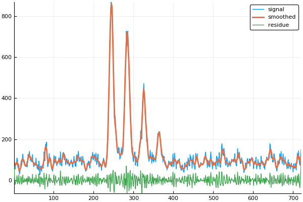

Direct Convolution Package
Table of Contents
1 Introduction
Under construction do not use!
This package goal is to compute convolution products
\begin{equation} \label{eq:main} \gamma[k]=\sum\limits_{i\in\Omega^\alpha}\alpha[i]\beta[k+\lambda i],\text{ with }\lambda\in\mathbb{Z}^* \end{equation}using direct (no FFT) methods.
We provide the
functions.
Eq. \ref{eq:main} has several applications:
2 Usage examples
using Plots using Revise using DirectConvolution using J4Org
files=["../src/linearFilter.jl"; "../src/SG_Filter.jl";]
2.1 Savitzky-Golay filters
Creates a set of Savitzky-Golay filters, window width is \(11=2*5+1\) and polynomial degree is \(3\).
sg = SG_Filter(Float64,halfWidth=5,degree=3)
This can be checked with
length(sg) polynomialOrder(sg)
11 3
Savitzky-Golay filters can be used to smooth or to compute smoothed
derivatives of a signal. The associated filter is obtained thanks to
the filter function.
filter(sg,derivativeOrder=2)
DirectConvolution.LinearFilter_DefaultCentered{Float64,11}([0.034965, 0.013986, -0.002331, -0.013986, -0.020979, -0.02331, -0.020979, -0.013986, -0.002331, 0.013986, 0.034965])
Maximum derivative order is equal to the polynomial order, however there is a dedicated function:
maxDerivativeOrder(sg)
3
Smoothing example:
smoothed=directConv(filter(sg,derivativeOrder=0),signal,ConstantBE,ConstantBE) plot(signal,label="signal") plot!(smoothed, label="smoothed",linewidth=2) plot!(signal-smoothed, label="residue")

Figure 1: Savitzky-Golay smoothing
Smoothed first order derivative example:
smoothed_d1 = directConv(filter(sg,derivativeOrder=1),signal) plot(signal,label="signal") plot!(smoothed_d1, label="smoothed derivative",linewidth=2)

Figure 2: Savitzky-Golay smoothed first order derivative
3 Code documentation
3.1 Linear filter
An abstract type to represent linear filters is defined.
abstract type LinearFilter{T<:Number} end
LinearFilter must provide filter coefficients and an offset used to define its support.
fcoef(c::LinearFilter) = c._fcoef Base.length(c::LinearFilter) = length(fcoef(c)) offset(c::LinearFilter) = c._offset Base.range(c::LinearFilter) = UnitRange(-offset(c),length(c)-offset(c)-1)
By default, the structure is assumed to have two fields: _fcoef and _offset. However, if you do not want that, simply overload the associated method.
3.1.1 Default implementation
LinearFilter_Default
struct LinearFilter_Default{T<:AbstractFloat,N} <: LinearFilter{T} _fcoef::SVector{N,T} _offset::Int end
LinearFilter_DefaultCentered
These filter must have an odd number of coefficent (length = 2N+1). The offset is not stored, its value is N.
struct LinearFilter_DefaultCentered{T<:AbstractFloat,N} <: LinearFilter{T} _fcoef::SVector{N,T} end function LinearFilter_DefaultCentered(c::Array{T}) where {T<:AbstractFloat}
Overloaded methods:
offset(f::LinearFilter_DefaultCentered{T,N}) where {T<:AbstractFloat,N} = (N-1)>>1
4 Documentation
4.1 Linear Filter
w=create_documented_item_array(files);
print(generate_org_string(w,tag="LinearFilter",header=3))
:RESULTS:
Index: [L]: LinearFilter_Default, LinearFilter_DefaultCentered, [o]: offset.
4.1.1 LinearFilter_Default
struct LinearFilter_Default{T<:AbstractFloat,N} <: LinearFilter{T}
Default linear filter
4.1.2 LinearFilter_DefaultCentered
struct LinearFilter_DefaultCentered{T<:AbstractFloat,N} <: LinearFilter{T}
Default centered linear filter, size = 2n+1
function LinearFilter_DefaultCentered(c::Array{T}) where {T<:AbstractFloat}
Creates a centered linear filter from an array of size = 2n+1
4.2 Convolution functions
These are the main functions of the package, allowing to compute Eq. \ref{eq:main}.
4.2.1 directConv!
function directConv!(tilde_α::AbstractArray{T,1}, α_offset::Int, λ::Int, β::AbstractArray{T,1}, γ::AbstractArray{T,1}, Ωγ::UnitRange{Int}, ::Type{LeftBE}=ZeroPaddingBE, ::Type{RightBE}=ZeroPaddingBE; accumulate::Bool=false) where {T <: Number, LeftBE <: BoundaryExtension, RightBE <: BoundaryExtension}
5 UTest
include("../test/runtests.jl")
6 TODO [0/1]
[ ]add example with derivative taking X into account